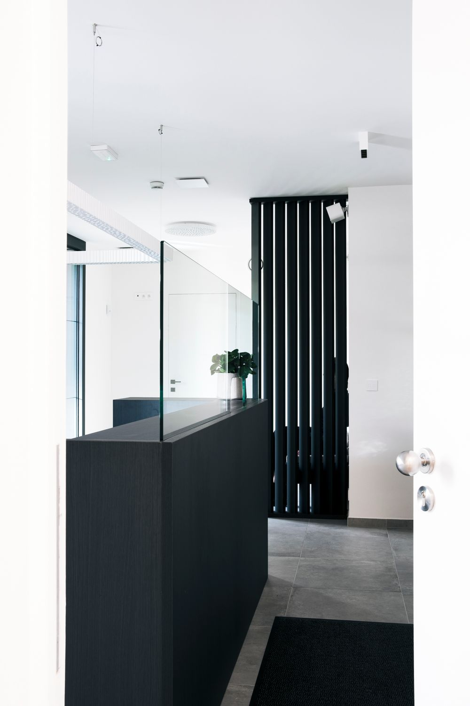
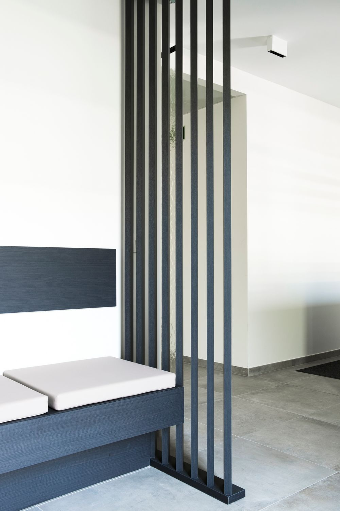
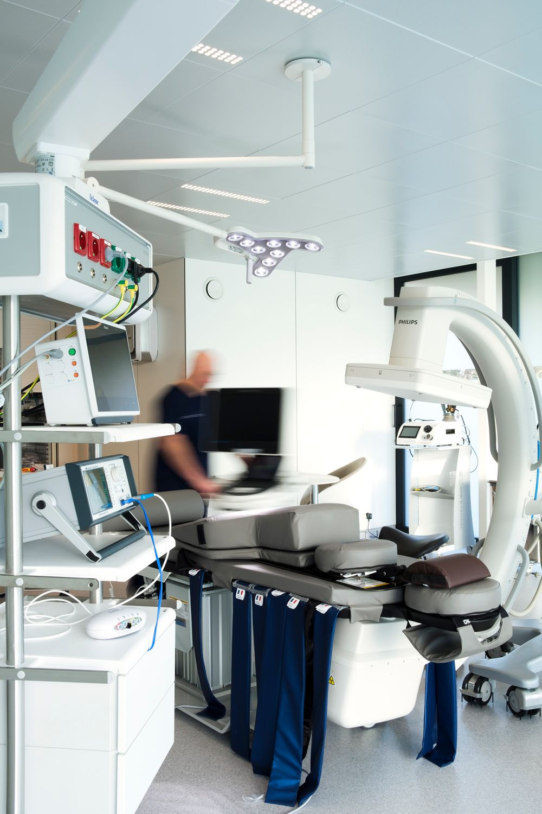
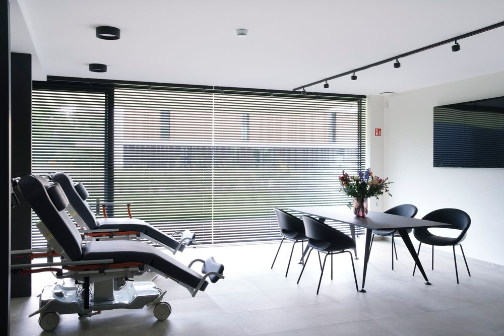

Rug- en nekklachten
Acuut of langbestaand, hernia met uitstralende klachten in armen of benen, chronische pijn door arthrose.
Ons doel is om u te helpen bij het beheersen en verminderen van pijn, voor een betere levenskwaliteit.
Wij behandelen een breed spectrum van pijnklachten met een persoonlijke en multidisciplinaire aanpak.
Acuut of langbestaand, hernia met uitstralende klachten in armen of benen, chronische pijn door arthrose.
Intense aangezichtspijn, cervicogene hoofdpijn, cluster- en occipitale hoofdpijn.
Doorheen het hele lichaam: heftige pijnscheuten, brandend gevoel of krampen vanuit een zenuw.
Arthrose, chronische peesletsels, acute peesontstekingen ter hoogte van schouder, heup, knie en meer.
Onze betrokkenheid bij uw welzijn eindigt niet wanneer u onze kliniek verlaat. We zullen regelmatige opvolgafspraken plannen om uw vooruitgang te evalueren, eventuele veranderingen aan te brengen in het behandelplan indien nodig, en om uw vragen te beantwoorden.
Dr. Christ Declerck — MD, FIPP, CIPS, ASRA-PMUC
Moderne faciliteiten in een rustige en toegankelijke omgeving.




U kunt online een afspraak inplannen via het patiëntenportaal, of telefonisch contact opnemen met één van onze locaties.